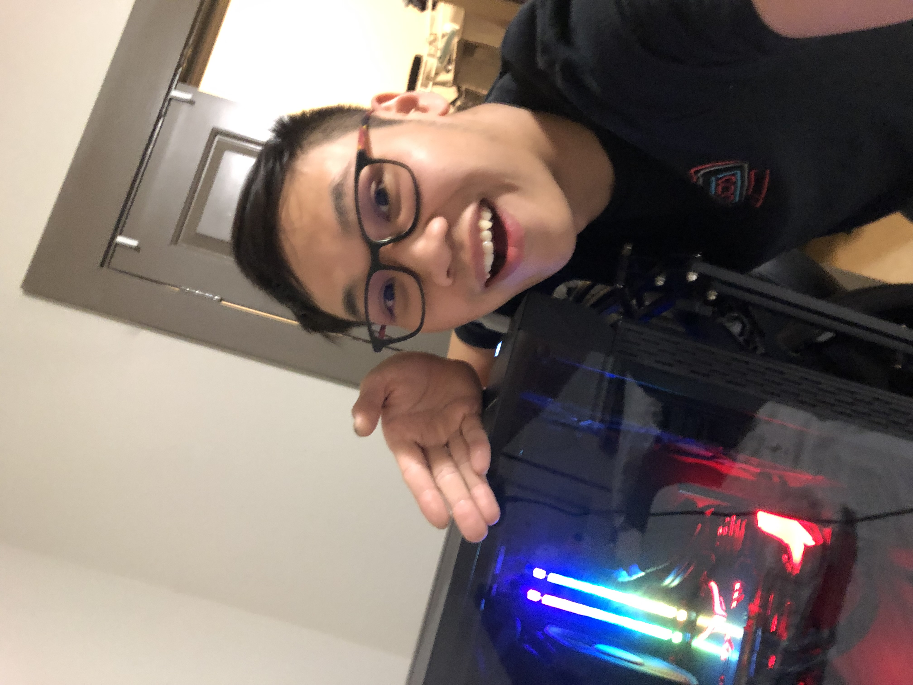

Hello There!
Raymond Nguyen
Bachelor's in Computer Information Science, Lamar University
Cloud Practitioner
Amatuer Robotics Enthusiast
You will see some of my technical abilities, projects, and things I have learned in my Computer Science journey.
About Me
My previous experience and education in collision repair enables me to have a strong eye in fine details and expertise in putting things together whether it’s concrete or conceptionally.
Throughout my last few years, I worked in the automotive collision industry taking cars apart and putting them back together. I repaired car specifications from framework, bodywork, SRS, A/C, to electrical components. Bodywork requires you to have great attention to detail. Fixing a car back to showroom shine requires precision. You can rely on me to make sure that the finest details don’t get overlooked.
In addition to my technical experience, I worked as a perishable’s representative at HEB in the meat department where I cut, ground, packaged, and stocked different varieties of meat from ribeye to dry age strip. Working in a team of seven, everyone had to do their part to ensure that the gears in the machine turned efficiently. I can communicate with the team and effectively do my part without any issues.
Currently I’m working towards my bachelor’s degree in computer information science at Lamar University with a graduation date of December 2026. I have gained experience working on computers as an information technology intern and learned to maintain and install different systems at various locations. I also hold an AWS Certified Cloud Practitioner certification and have experience in the following programming languages: Java (intermediate), Python (beginner), and C++ (intermediate). While my experience has shortcomings, I accelerate at retaining any sort of knowledge that you may throw my way.
My Projects
Image Processing and Detection with Python
In this project, I used python to be able to detect animals through a convolutional neural network model. With over 90 different animals and over 5400 images, this model trained, tested, and was able to accurately detect the said animal such as; zebras, pandas, and more.
Features:
- Prepares animal image dataset for training
- Processes and resizes images to prepare for modeling
- Convolutional Neural Network learns patterns from the images
- Trains, validates, predicts, and displays the results with model accuracy
Technologies Used:
- Python
- NumPy
- Matplotlib
Project Screenshots:


Tournament-Style Bracket-Based System
This simple project is a tournament system developed using C++. It organizes participants into tournament brackets and uses a coin flip game to determine match winners.
Features:
- Participant registration
- Tournament creation and participant limits
- Random coin flip matches
- Best two out of three scoring
- Loser's bracket for participants who lose once
- Match results and tournament champion display
Technologies Used:
- C++
- Visual Studio
Coin Flip Project Screenshots:


Skills
Programming Languages
- Java
- C++
- SQL
- Python
- HTML
Tools
- Eclipse
- Google Colab
- MySQL Workbench
- Microsoft Visual Studio
- Jupyter Notebook
Certifications
- AWS Certified Cloud Practitioner
My Resume
Take a look at my resume!
My Resume Download LinkResume Preview
Contact Me
My contact information will go here.